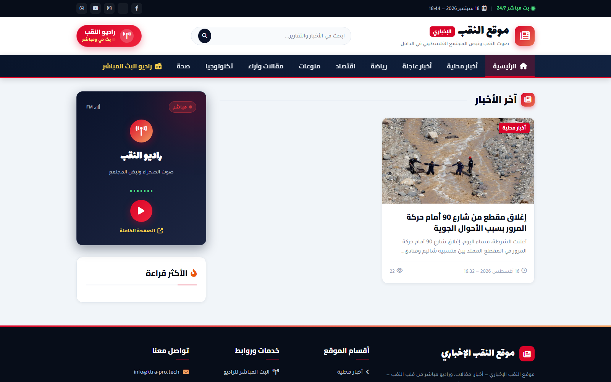
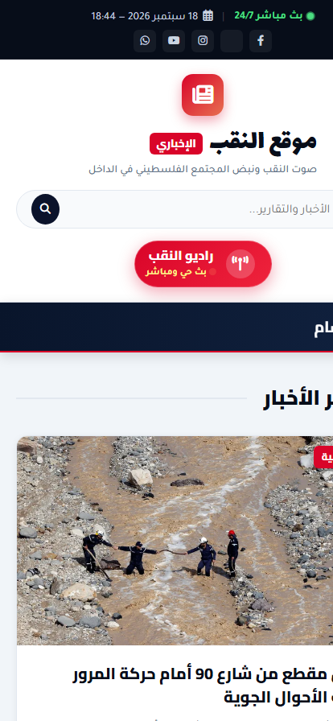
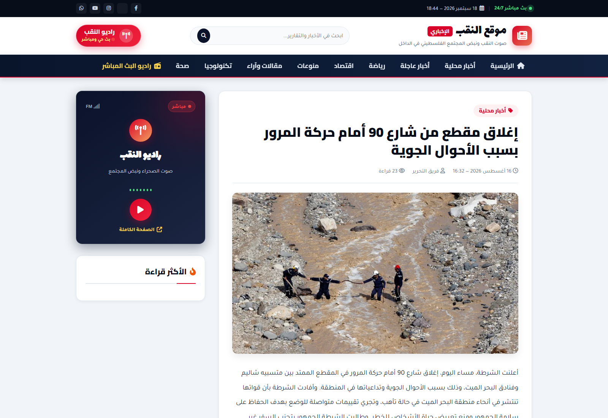

معرض واجهات المنصة
شاشات حقيقية من منصة وراديو أخبار النقب

الواجهة الرئيسية (Desktop)
تخطيط إخباري متوازن يجمع بين الخبر العاجل، المقالات المصورة، وشريط الأقسام مع مشغل الراديو المباشر.

صفحة الراديو الليلية الفاخرة
سماء متلألئة وأمواج صوتية حية تعكس طابع الليالي الصحراوية وتجعل تجربة الاستماع شجية وممتعة.

تجربة الموبايل السلسة
تصفح سريع جداً متوافق تماماً مع كافة أحجام شاشات الهواتف الذكية مع استهلاك بيانات منخفض للغاية.

صفحة قراءة المقالات والأخبار
خطوط عربية مريحة للقراءة، أزرار مشاركة سريعة عبر شبكات التواصل، ومساحات إعلانية محسوبة بعناية.